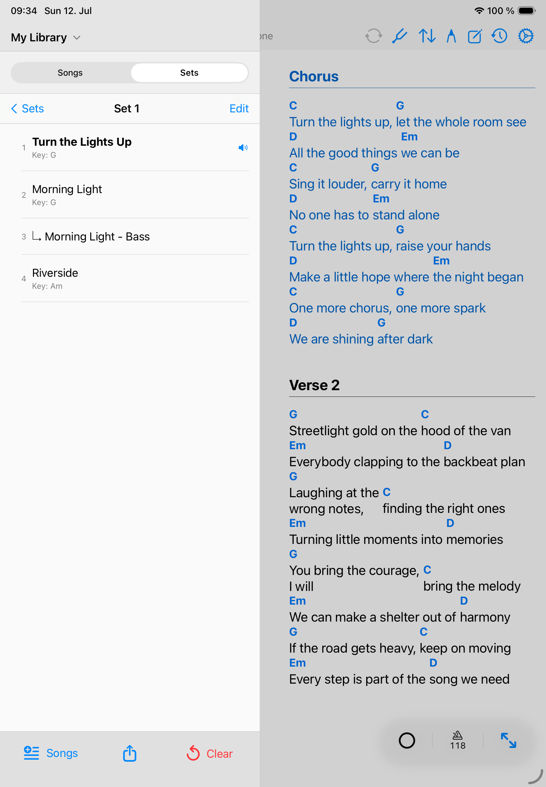
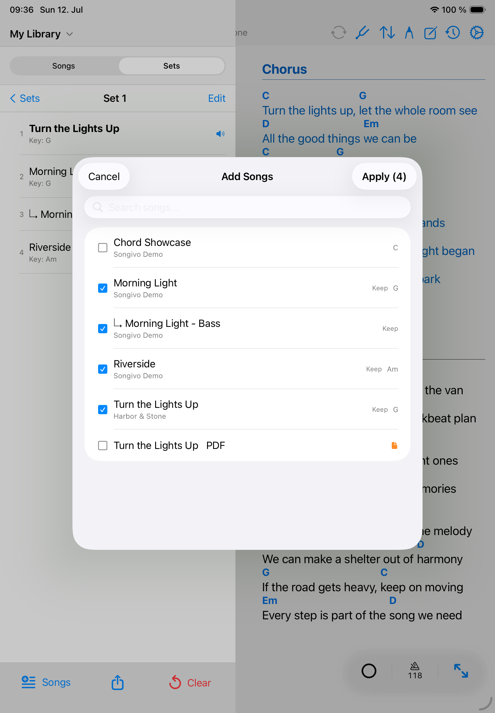
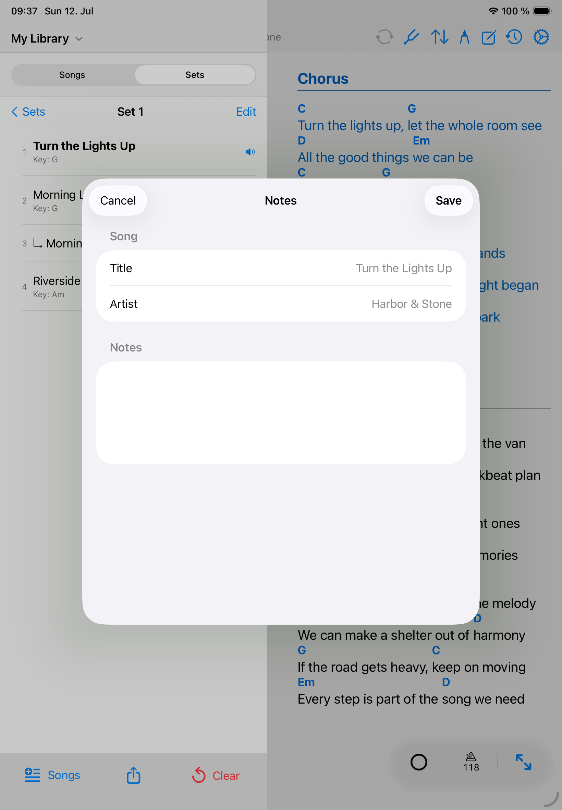

Shows
Setlists
Setlists turn your library into the order you need for rehearsal, worship, theater, lessons, or a gig.
A setlist stores performance order separately from the library. The same song can appear in many setlists without duplicating the song record.

Create a setlist
- Choose the personal or band library that should own the setlist.
- Open Sets and create a new setlist with a clear name.
- Add a performance date when the set is tied to an event.
- Use Add songs to choose charts from the selected library.
- Review the order before rehearsal and adjust it as the show changes.

Slot details / slot notes
- Add slot notes for intros, cues, transitions, capo reminders, or leader notes.
- Reorder songs by long pressing on a song and dragging it to the new position.
